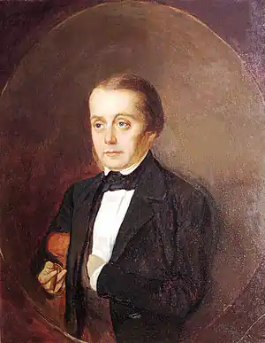

Гончаров входив у літературу нерішуче, переживаючи глибокі сумніви у своїх силах: "стосами списаного паперу … топив грубки".
18 червня 1812 року в купецькій родині народився Гончаров Іван Олександрович — російський письменник.
Початкову освіту він здобув у приватному пансіоні, де вивчив французьку й німецьку мови, перечитав всі доступні книги "неймовірну суміш … майже вивчену напам'ять". У 1822 році його віддали у Московське комерційне училище, в 1831 році він вступив на словесне відділення Московського університету: вивчення літератури підстьобувало "пристрасть до читання" і "формувало перо". Ще студентом Гончаров переклав і помістив в журналі "Телескоп" дві глави з роману Е. Сю "Атар-Гюль" (1832). По закінченні університету (1834) він ненадовго повернувся до Симбірська, потім назавжди переїхав до Петербурга, де почав службу в Міністерстві фінансів, продовжуючи весь вільний час займатися літературою: багато перекладав, писав романтичні вірші і жартівливі повісті для домашнього читання в колі Майковых (у цій сім'ї він викладав російську літературу і латинська мова майбутньому поетові А. Н. Майкову і його братові Ст. Н. Майкову, згодом відомому критику). В їх домі письменник зав'язав і перші літературні знайомства. Гончаров входив у літературу нерішуче, переживаючи глибокі сумніви у своїх силах: "стосами списаного паперу … топив грубки". У 1842 р. він написав нарис "Іван Савич Поджабрин", надрукований лише через шість років. В1845 Гончаров напружено працював над романом, який передав В. Р. Белінського "для прочитання і рішення, чи годиться він". Цей роман "Звичайна історія" викликав захоплену оцінку критика і його оточення. Надрукований в "Современнике" в 1847 році, роман приніс письменнику справжнє визнання. Зіткнення двох центральних героїв роману Адуева-дядька і Адуева-племінника, уособлюють тверезий практицизм і захоплений ідеалізм, сприймалося сучасниками як "страшний удар романтизму, мрійливості, сентиментальності, провинциализму" (Бєлінський). Однак автор малював з іронією не тільки прекраснодушие і ходульное поведінка запізнілого романтика. В. П. Боткін, справедливо зауважуючи, що в романі дістається і голому практицизм, що художник "б'є обидві ці крайнощі", зізнавався: "Я нічого не знаю розумніші цього роману". Десятиліття потому антиромантический пафос ставав все менш актуальним, і наступні покоління сприймали роман інакше як саму "звичайну історію" охолодження і протверезіння людини, як вічну тему життя. Багатовимірність авторської позиції і витонченість психологічного аналізу, стали стійкими рисами поетики Гончарова, пояснюються частково і своєрідним автобиографизмом роману: кожен з героїв-антиподів психологічно близький письменнику, представляючи різні проекції його душевного світу. У 1852 Гончаров в якості секретаря адмірала Е. В. Путятіна відправився в кругосвітнє плавання на фрегаті "Паллада". Секретарські обов'язки забирали багато сил, тим не менш вже під час експедиції "з'явилася полювання писати", і Гончарів "набив цілий портфель колійними записками". Вони склалися в результаті в книгу нарисів, що друкувалися в 1855-57 в періодиці, а в 1858 році вийшли окремим виданням під назвою "Фрегат "Паллада". У Гончарова з дитинства був смак до літератури подорожей, і тут він виступив істинним майстром цього жанру. "Паралель між своїм і чужим", гострі враження від зустрічі з іншими культурами (головним чином з британською та японської), звичка все "прикидати" "на свій аршин" забезпечили зацікавлену увагу російського читача до цих нарисів. Н. А. Добролюбов захоплювалися дотепністю та спостережливістю "блискучого, цікавого оповідача". Після повернення з подорожі Гончаров визначився на службу в Петербурзький цензурний комітет. Посада цензора, а також прийняте їм запрошення викладати російську літературу спадкоємця престолу перетворили письменника в "предмет обурення лібералів" (щоденник Е. А. Штакеншнейдер). Помітно охололи його відносини з колом Бєлінського. Пізніше Гончаров підкреслював, що його ліберальні настрої молодості не мали нічого спільного з "юнацькими утопіями в соціальному дусі" і що вплив Бєлінського обмежувалося сферою естетики. Гончаров-цензор полегшив друковану долю цілого ряду кращих творів російської літератури ("Записки мисливця" Тургенєва І. З., "Тисяча душ" А. Ф. Писемського та ін), однак до радикальних видань він ставився відверто вороже, що викликало роздратування в колах лівої інтелігенції. Протягом кількох місяців, з осені 1862 по літо 1863, Гончаров редагував офіціозну газету "Північна пошта", що також погано відбилося на його репутації. У 1860-70-ті рр. Гончаров, людина недовірлива і, за його власним визначенням, "знервований", вперто віддалявся від літературного світу. "Шматок незалежного хліба, перо і тісний гурток найближчих приятелів" склали його життєвий ідеал: "Це згодом називали в мені обломовщиною". Задум нового роману склався у Гончарова ще в 1847 році. Два роки потому була надрукована глава "Сон Обломова" "увертюра усього роману". Але читачеві довелося ще протягом десяти років чекати появи повного тексту "Обломова" (1859), відразу завоював величезний успіх: "Обломов і обломовщина … облетіли всю Росію і стали словами, назавжди укорінилися в нашій мові" (А. В. Дружинін). Роман спровокував бурхливі суперечки, засвідчуючи про глибину задуму. Стаття Добролюбова "Що таке обломовщина" (1859) являла собою нещадний суд над головним героєм, "абсолютно інертним" і "апатичним" барином, символом відсталості кріпосницької Росії. Естетична критика, навпаки, бачила у героя "самостійну і чисту", "ніжну і люблячу натуру", далеку від модних віянь і зберегла вірність головним цінностям буття. До кінця минулого століття полеміка про роман тривала, причому остання трактування поступово взяла гору: ледачий мрійник Обломов за контрастом з сухим раціоналістом Штольцем став сприйматися як втілення "артистичного ідеалу" самого романіста, тонкий психологічний малюнок свідчив про душевній глибині героя, читача відкрився м'який гумор і прихований ліризм Гончарова. На початку 20 століття В. Ф. Анненський по праву назвав "Обломова" "найдосконалішим створенням" письменника. "Обрив" (1868) був задуманий ще в 1849 як роман про складні стосунки митця і суспільства. До 1860-м рр. задум збагатився новою проблематикою, народженої пореформеної епохи. У центрі твору виявилася трагічна доля революційно налаштованої молоді, представленої в образі "нігіліста" Марка Волохова. Вже символічну назву роману, знайдене на самому останньому етапі роботи, свідчило про авторське неприйняття суспільного радикалізму. Видання лівої орієнтації обурено реагувала на роман, відмовивши автору в таланті і право суду над молоддю, пройшовши повз глибокої трактування любовної теми в "Обриві". Напружений конфліктний фон, не властивий зазвичай Гончарову-романістові, диктувався гострою постановкою проблеми свободи в любові: боротьба головної героїні з пристрастю, зіткнення моральних імперативів з силою любовного потягу дали Гончарову багатий матеріал для глибокого психологічного аналізу. Після "Обриву" ім'я Гончарова рідко з'являлося у пресі. Він обмежився публікацією лише кількох мемуарних нарисів і літературно-критичних статей, серед яких виділяється "критичний етюд" "Мильон терзань" (1872), присвячений постановці "Горя від розуму" А. С. Грибоєдова на сцені Александрінського театру, що став класичним розбором комедії. Гончаров запропонував таку глибоку трактування психологічної і драматичної природи "Горя від розуму", що жоден історик літератури в подальшому не обійшов увагою його аналіз. Сам письменник болісно переживав творче мовчання останніх десятиліть. Його листи тих років малюють образ самотнього і замкнутого людини, надзвичайно тонкого спостерігача, свідомо сторонящегося життя і разом з тим страждає від свого ізольованого положення.